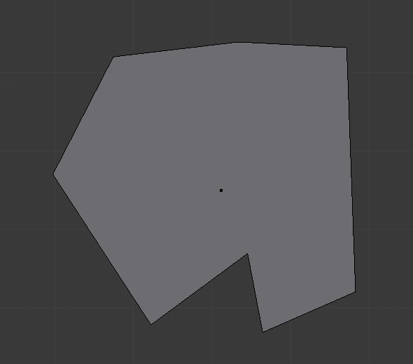
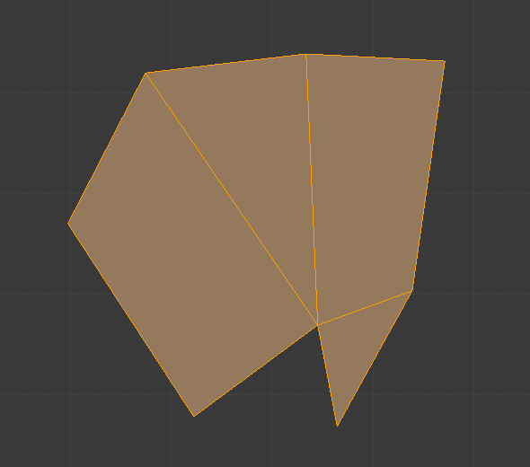
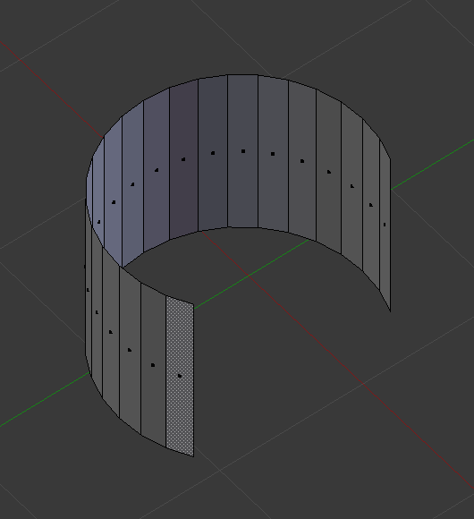

Face Tools¶
These are tools that manipulate faces.
Creating Faces¶
Make Edge/Face¶
Reference
FThis will create an edge or some faces, depending on your selection. Also see Creating Geometry.

A closed perimeter of edges. |

Filled using fill. |
{kind=link}
Fill¶
Reference
Alt-FThe Fill option will create triangular faces from any group of selected edges or vertices, as long as they form one or more complete perimeters.

Filled using fill.
note, unlike creating n-gons, fill supports holes.

A closed perimeter of edges with holes. |

Filled using fill. |
Beauty Fill¶
Reference
Alt-Shift-FBeautify Fill works only on selected existing faces. It rearrange selected triangles to obtain more “balanced” ones (i.e. less long thin triangles).

Text converted to a mesh. |

Result of Beauty Fill, |
Grid Fill¶
Reference
Grid Fill uses a pair of connected edge-loops to fill in a grid that follows the surrounding geometry.

Input. |

Grid Fill Result. |
Convert Quads to Triangles¶
Reference
Ctrl-TAs its name intimates, this tool converts each selected quadrangle into two triangles. Remember that quads are just a set of two triangles.
Convert Triangles to Quads¶
Reference
Alt-JThis tool converts the selected triangles into quads by taking adjacent tris and removes the shared edge to create a quad, based on a threshold. This tool can be performed on a selection of multiple triangles.
This same action can be done on a selection of two tris,
by selecting them and using the shortcut F, to create a face, or by selecting the
shared edge and dissolving it with the shortcut X .
To create a quad, this tool needs at least two adjacent triangles. If you have an even number of selected triangles, it is also possible not to obtain only quads. In fact, this tool tries to create “squarishest” quads as possible from the given triangles, which means some triangles could remain.

Before converting tris to quads. |

After converting tris to quads. |
{kind=link}
All the menu entries and hotkey use the settings defined in the Mesh Tools panel:
- Max Angle
- This values, between (0 to 180), controls the threshold for this tool to work on adjacent triangles. With a threshold of 0.0, it will only join adjacent triangles that form a perfect rectangle (i.e. right-angled triangles sharing their hypotenuses). Larger values are required for triangles with a shared edge that is small, relative to the size of the other edges of the triangles.
- Compare UVs
- When enabled, it will prevent union of triangles that are not also adjacent in the active UV map.
- Compare Vcol
- When enabled, it will prevent union of triangles that have no matching vertex color.
- Compare Sharp
- When enabled, it will prevent union of triangles that share a “sharp” edge.
- Compare Materials
- When enabled, it will prevent union of triangles that do not use the same material index.
Solidify¶
Reference
Ctrl-F This takes a selection of faces and solidifies them by extruding them uniformly to give volume to a non-manifold surface. This is also available as a Modifier. After using the tool, you can set the offset distance in the Tool Palette.
- Thickness
- Amount to offset the newly created surface. Positive values offset the surface inward relative to the normals. Negative values offset outward.

Mesh before solidify operation. |

Solidify with a positive thickness. |

Solidify with a negative thickness. |
{kind=link}
Rotate Edges¶
Reference
This command functions the same edge rotation in edge mode.
It works on the shared edge between two faces and rotates that edge if the edge was selected.

Two Faces Selected. |

Full Render. |
See Rotate Edge for more information.
Normals¶
See Editing Normals for more information.